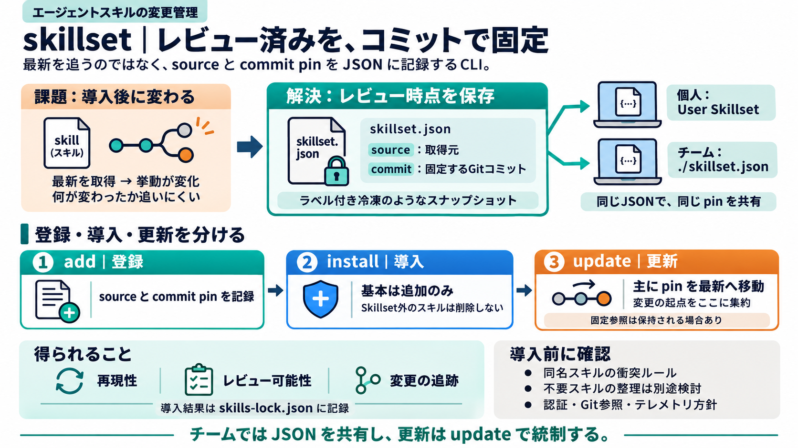

GitHub - itsmeyaw/skillset: CLI to easily manage your skills. Start saving token by installing only necessary skills! · GitHub
## Repository files navigation Skillset: Easily manage, install, and share multiple agent skills at once. Based on Verc…

## Repository files navigation Skillset: Easily manage, install, and share multiple agent skills at once. Based on Verc…
An `npm:` entry references skills in an installed package. Other entries reference Git sources and are fetched into the …
## Repository files navigation # skills The CLI for the open agent skills ecosystem. Supports OpenCode, Claude Code, …
Today we’re also introducing skills.sh, a directory and leaderboard for skill packages. Use it to: discover new skill…
MOUNTAIN VIEW, Calif., Feb. 17, 2026 /PRNewswire/ -- As AI agents evolve from assistants into autonomous digital actors …